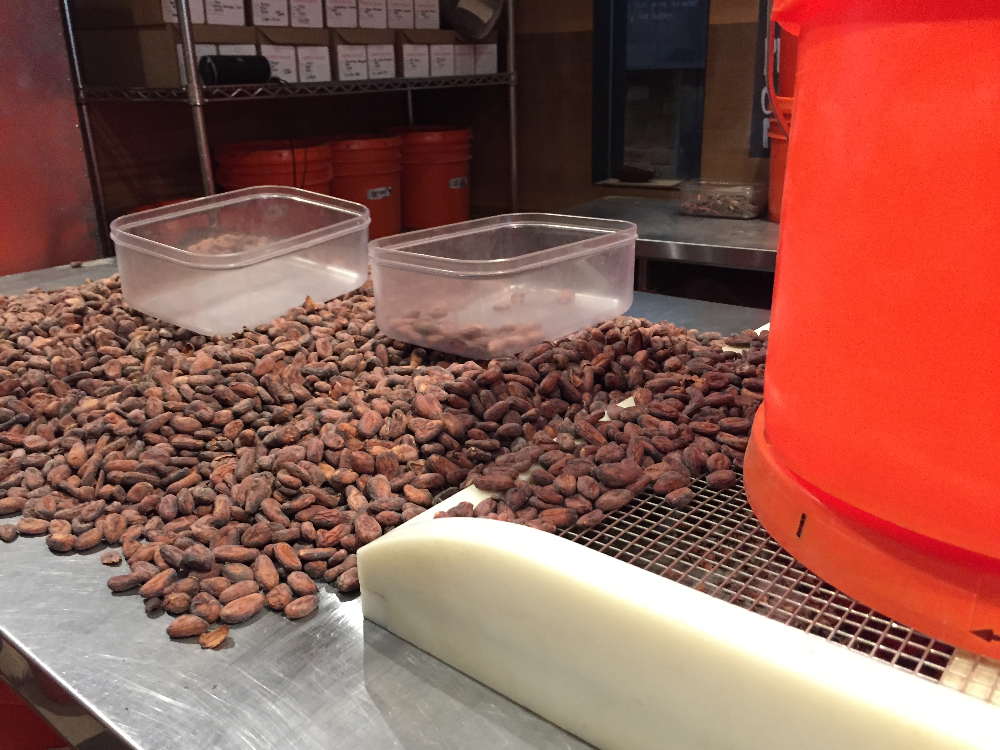
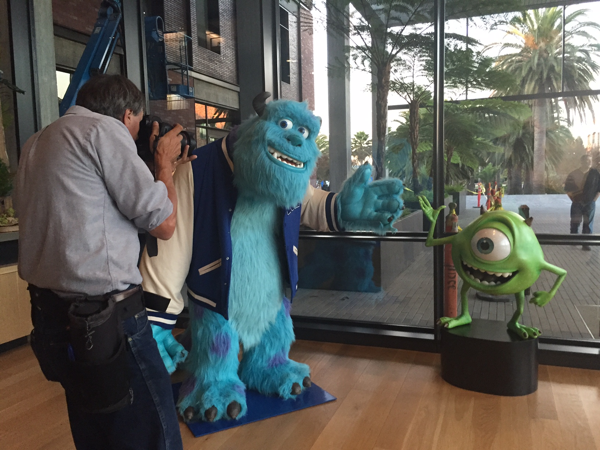
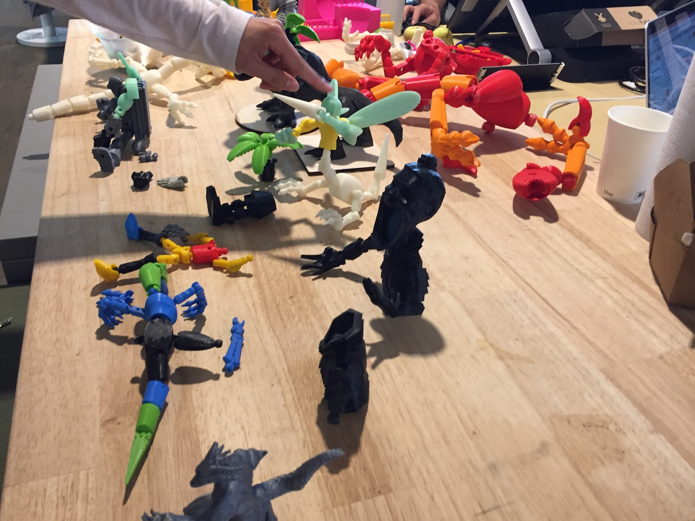

How Dandelion Chocolate goes from beans to bars
Like so many Bay Area startups, Dandelion Chocolate founders Todd Masonis and Cameron Ring got their start in a garage in Silicon Valley. Only they work with beans, not bytes... (Continue)

Inside Pixar: jumbo characters, Steve Jobs touches in Emeryville
There's a touch of Pixar magic in every corner of the company's Emeryville headquarters. You can't walk too far around Pixar Animation Studios without spying a Pixar character... (Continue)

Autodesk's Pier 9 office in S.F.: part art gallery, part workshop
Autodesk's Pier 9 is part workshop, part art gallery and at least a little traditional office. The goal: to provide all the tools you might need to complete a project... (Continue)